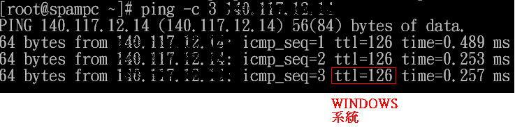
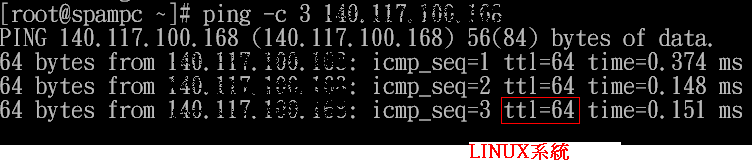
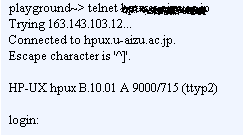
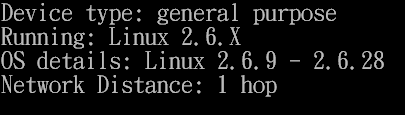
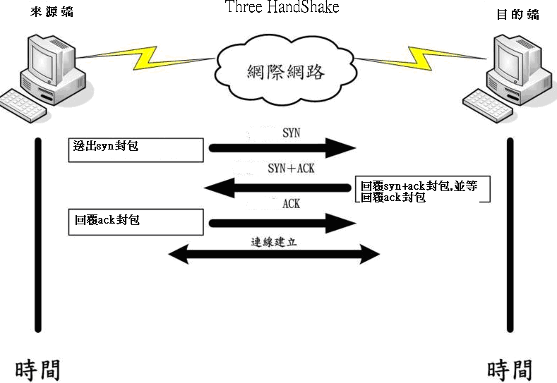
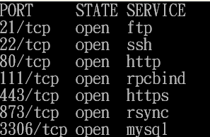
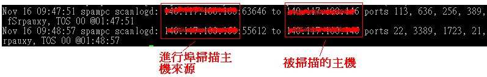

感謝您對「自由軟體鑄造場」的支持與愛護，十多年來「自由軟體鑄造場」受中央研究院支持，並在資訊科學研究所以及資訊科技創新研究中心執行，現已完成階段性的任務。 原網站預計持續維運至 2021年底，網站內容基本上不會再更動。本網站由 Denny Huang 備份封存。
也紀念我們永遠的朋友 李士傑先生（Shih-Chieh Ilya Li）。
也紀念我們永遠的朋友 李士傑先生（Shih-Chieh Ilya Li）。
Tech Column  以 scanlogd 偵測埠掃描事件
以 scanlogd 偵測埠掃描事件
以 scanlogd 偵測埠掃描事件
Created at Friday, 17 December 2010 00:11 Last Updated on Tuesday, 28 December 2010 18:18
前言
所有犯罪行為通常具有一定的行為模式，即確立目標 → 勘察環境 → 決定適當的工具 → 攻擊。網路攻擊也不例外，當駭客決定目標後，即會以掃描工具來針對目標進行掃描，而後再根據掃描結果決定攻擊方式來進行攻擊。因此，如果能儘早得知進行掃描的惡意來源 IP，即可在惡意攻擊者進行攻擊之前來進行防堵，進而降低系統的危害，在本文中，筆者將介紹一套掃描偵測工具（scanlogd，官方網站為：https://www.openwall.com/scanlogd/），用來偵測實施惡意連接埠掃描的來源 IP，以便管理者能提早因應相關情況的發生。作業系統掃描原理
在駭客決定攻擊目標後，第一個步驟往往是先行探測目標主機的作業系統。由於每一家作業系統對於封包的處理方式均不同，探測軟體即可利用此種特性來辨識出不同的作業系統。由於此種方式就像人類的指紋一樣，所以又稱為「作業系統指紋 (OS Fingerprint)」辨識，作業系統探測方式可分為主動式及被動式，如下所述：主動式：
探測軟體透過傳送特別打造的 TCP，UPD 或 ICMP 封包至被探測主機端，再根據被探測主機回傳的封包特徵，來辨識出該主機的作業系統。此種工具以 nmap 為代表。官方網址為：https://nmap.org/。被動式：
探測軟體並不主動傳送封包至被探測主機上，而是被動的監看往來封包，籍由往來封包的特徵來辨識出作業系統，此種探測軟體以 p0f 為代表。官方網址為 https://lcamtuf.coredump.cx/p0f.shtml。在本文中將不多加探討此種探測技術，請有興趣的讀者自行參閱相關說明。接下來，我們繼續說明主動式作業系統的辨識原理：
- FIN 封包探測或 XMAS 封包探測
- Bogus（偽造）封包探測
- 以 Tcp initial window（tcp 初始化視窗）探測
- ICMP TOS (Type Of Service) 判別
路的連線狀態與連線的正確性。常用的 ICMP 類型說明如下表：
| Icmp類型 |
說明 |
| 0 | Echo Reply (代表一個回應信息) |
| 3 | Distination Unreachable (表示目的地不可到達) |
| 4 | Source Quench (當 router 的負載過高時，此類別碼可用來讓發送端停止發送訊息) |
| 5 | Redirect (用來重新導向路由路徑的資訊) |
| 8 | Echo Request (請求回應訊息)，我們一般使用ping指令確認對方主機是否有回應，即使用此類型送出Request要求。如 果對方存在，即會回應類型０的Echo Reply封包。 |
| 11 | Time Exceeded for a Datagram (當資料封包在某些路由傳送 的現象中造成逾時狀態，此類別碼可告知來源該封包已被 忽略的訊息) |
| 12 | Parameter Problem on a Datagram (當一個 ICMP 封包重複之前的錯誤時，會回覆來源主機關於參數錯誤的訊息) |
| 13 | Timestamp Request (要求對方送出時間訊息，用以計算路由時間的差異，以滿足同步性協定的要求) |
| 14 | Timestamp Replay (此訊息純粹是回應 Timestamp Request 用的) |
| 15 | Information Request (在 RARP 協定應用之前，此訊息是用來在開機時取得網路信息) |
| 16 | Information Reply (用以回應 Infromation Request 訊息) |
| 17 | Address Mask Request (這訊息是用來查詢子網路 mask 設定信息) |
| 18 | Address Mask Reply (回應子網路 mask 查詢訊息的) |
ICMP 封包除了可用來確認主機的狀態外，也可利用探測作業系統的種類，探測程式可利用 ping 程式送出一個 icmp echo 的請求至要探測的主機上，再由對方主機回的 echo reply 封包中的 TTL (Time To Live) 的欄位值（不同作業系統對於 TTL 欄位值的設定都不一樣）來初步判斷主機的作業系統。有興趣的讀者可利用 ping 指令來觀察 linux 系統及 windows 系統回傳封包的 TTL 欄位，如下所示：
ping 來測試其回應值，即可發現兩種作業系統所回應封包中的 TTL 值明顯不同。掃描軟體即可利用此種特徵來初步區分作業系統的種類，如下圖為 linux 系統及 windows 系統的測試畫面：

▲圖1

▲圖2
由上可明顯的看出不同的作業系統會設定不同的 TTL 值，探測軟體即可利用此種特性來初步判別作業系統的種類。
另外一種探測方式是利用管理者不當的設定系統組態而造成作業系統資訊外洩，讀者可利用如 telnet 即可能獲知作業系統的資訊。如下圖即可得知該主機的作業系統：

▲圖3
另外讀者也可利用現成的工具來探測主機的作業系統，如使用 nmap – O 來偵測主機的作業系統，如下圖所示：

▲圖4
埠掃描 (port scan) 原理
在確定主機的作業系統後，接下來的步驟即為確認該主機上運作的服務資訊以便擬定攻擊策略。主機服務的偵測主要是利用被探測主機對於探測封包的回應情況，來判別被探測主機的連接埠 (Port) 是否為開啟的情況。所使用的探測技術，如下所述：
全連接技術
此為正常連接的探測方式，利用與被探測主機完成三向交握 (Three Handshake) 來確認被探測主機的埠是否處於開啟的狀態。三向交握原理如下所述：
▲圖5
在上圖中，來源端欲與目的端完成連線，會經由下列步驟來完成連線：
1.來源端主機送出 SYN 封包至目的端主機來要求連線。
2.目的端主機收到 SYN 封包要求 後，會回覆 SYN＋ACK 封包給來源端主機。
3.來源端主機收到目的端主機回覆的 SYN＋ACK 封包後，即會回覆 ACK 封包至目的端主機，至此完成三向交握 (Three Handshake) 流程，雙方建立連線。
一旦掃描軟體被探測主機順利完成三向交握 (Three Handshake) 並與目標主機完成連線，即可代表該探測埠處於開啟的狀態。反之即代表探測埠處於關閉的狀態。此種掃描方式即稱為全連接掃描。全連接掃描由於已完成正常的連線，所以此種掃描會被防火牆或 IDS（入侵偵測系統）所記錄。
半連接探測技術
由於使用全連接方式的掃描，很容易即被被防火牆或 IDS（入侵偵測系統）所記錄，所以一般的埠探測技術大都不會與被探測主機完成正常的連線以避免被記錄，此種的探測技術稱為半連接探測技術，常用的半連接探測技術，敍述如下：- SYN 封包掃描
- SYN/ACK 封包掃描技術
- FIN 封包掃描技術
nmap -sS #利用 syn 掃描來探測被探測主機所開啟埠資訊
如下圖示:

▲圖6
安裝 scanlogd
請讀者依下列步驟，安裝 scanlogd：
1.請至官方網站取得最新版本的 scanlogd（筆者所取得的版本為 2.2.6）
2.adduser scanlogd #新增一個 scanlogd 的使用者
3.解壓縮後，即使用 make linux 來編譯 scanlogd
編譯成功後，執行 scanlogd 即會常駐在系統中。
此時，請讀者在另一台主機上，以 nmap 程式掃描 scanlogd 所在的主機上（如 nmap ），查閱 scanlogd 所在主機的 /var/log/messages，即可發現如下的掃描資訊（可清楚的得知進行埠掃描的惡意來源 IP）。

▲圖7
讀者可經常的查閱 /var/log/messages 來掌握進行埠掃描的惡意來源 IP 資訊。
Special


Open Source Software Foundry‧ Best Viewed with IE7.0 or Firefox2.0 above, 1024x768 Resolution. E-Mail：contact@openfoundry.org
Address：No.128, Sec.2, Academia Rd., Institute of Information Science, Academia Sinica, Nangang District, Taipei City 11529, Taiwan (R.O.C).
Privacy Policy. Terms-of-use
Address：No.128, Sec.2, Academia Rd., Institute of Information Science, Academia Sinica, Nangang District, Taipei City 11529, Taiwan (R.O.C).
Privacy Policy. Terms-of-use